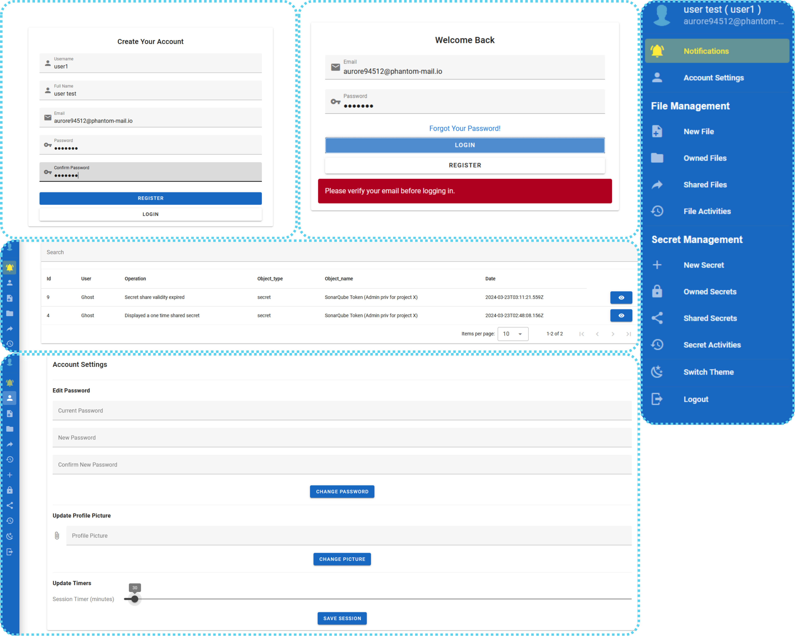

Chaos Engineering Exploration: Developping a Resilient Web Application for File and Secret Sharing.
Project Presentation
Introduction
Chaos Engineering is rapidly becoming a cornerstone in enhancing software reliability. In this blog post, I’ll introduce the engineering deg graduation internship project I worked on, which revolved around developing a file and secret sharing web application for the purpose of exloring Chaos Engineering principles to improve system resilience. The journey included web development, containerization, Deployment on K8S with monitoring (Test/Dev cluster & AKS) and finally experimenting with Chaos Enginering.
The project is published on my GitHub.
Why This Project?
Modern software systems are increasingly more distributed and more cloud based and with that comes inherent complexity (This was researched as early as 1986 by Frederick P. Brook Jr. in his research paper No silver bullet - essence and accidents of software engineering). Traditional methods like manual testing or reactive troubleshooting often fall short in identifying mishaps of software engineering. Chaos engineering emerged to solve that by relying on chaos theory. This project aimed to:
- Build a resilient web application for file and secret sharing.
- Demonstrate the effectiveness of Chaos Engineering in identifying and addressing hidden system weaknesses.
Project Scope and Objectives
The project was structured to achieve the following objectives:
- Develop a secure web application with robust user management, file, and secret sharing features.
- Containerize the application to ensure portability and consistency.
- Deploy the application on Azure Kubernetes Service (AKS) for production readiness with the use of Key Vault and monitoring services.
- Implement Chaos Engineering experiments to test and enhance the application’s resilience.
Project Planning
Global Use Case Diagram
As a starting point, we need to have an idea about the use cases of our application, so here is the general use case diagram:

1. Actors:
- Guest: A user who is not logged into the system. Primary interaction: They can create an account.
- Registered User: A user who has created an account in the system and has access to various features.
- Primary interactions: Login, Manage files, manage secrets, manage their account, and log out.
- Azure Key Vault (Cloud): A cloud service that the system interacts with to create and manage cryptographic key pairs for the sake of encrypting secrets. No direct interaction with human actors.
2. Use Cases:
- Create Account (Guest): The guest can create a new account to become a registered user. This process includes the creation of a key pair via the Azure Key Vault, which is necessary for secure file and secret management.
- Verify Account (Guest): The system includes a step for account verification. This use case is triggered as part of the account creation process.
- Login (Registered User): A registered user logs into the system. This use case is crucial as it allows access to the system’s core functionality like file and secret management.
- Logout (Registered User): After interacting with the system, the registered user can log out to terminate the session.
- Manage Files (Registered User): Once logged in, the user can perform file-related actions (e.g., uploading, downloading, or sharing files).
- Manage Secrets (Registered User): Similarly, the user can manage secrets (e.g., store, retrieve, or update sensitive information).
- Manage Account (Registered User): Users can modify their account set- tings or update personal information after logging in.
Project Management Approach
The whole project was carried out in agile sprints using the Scrum methodology. Below is an overview of the key releases/sprints:
| Release | Sprint | Details |
|---|---|---|
| Release-1 | Sprint-1 | Development of the User Management feature. |
| Sprint-2 | Development of the Secret Management feature. | |
| Sprint-3 | Containerization of the application so far. | |
| Release-2 | Sprint-4 | Setup of a test Kubernetes cluster and deployment of containerized services. |
| Sprint-5 | Development of the File Management feature, requiring a running Kubernetes cluster. Feature containerized and deployed on the test cluster. | |
| Sprint-6 | Setup of monitoring tools (Prometheus, Grafana) using Istio for service mesh capabilities. | |
| Release-3 | Sprint-7 | Setup of Azure Kubernetes Service (AKS) and managed Istio. Managed Prometheus and Grafana were integrated for monitoring. Azure Key Vault was implemented and deployment of all created manifests in AKS. |
| Sprint-8 | Setup of a chaos engineering environment to test the resilience of the system, with experiments conducted to identify and address system weaknesses. |
Development of the Features User Management & Secret Management
User Management
The User Management feature encompasses the creation, verification ad update of the user accounts. The feature is implemented using a Django RESTful Framework and VueJs (Vuetify 3) for the frontend.
User Management Frontend

User Management Backend
The following table documents the endpoints of the back-end API.
| Endpoint | Method | Description |
|---|---|---|
| /api/register | POST | Sends client specific data for the creation of a new user. Invokes other back-end functions such as hashing the password, sending a verification Email. |
| /api/login | POST | Sends client specific data for the login of an existing user. Invokes other back-end functions such as hashing the password, sending a verification Email. |
| /api/verifyEmail/<uidb64>/<token> | GET | Accessing this endpoint, given that the uidb64 and the token are correct, will change the attribute "verified" of the data model "userAccount" to True. |
| /api/get_notifications | GET | Fetches the notifications relevant to the currently logged in user. |
| /api/mark_notification_as_viewed | GET | Marks the notification as viewed removing it from the list of notifications. |
| /api/get_user_details | GET | Fetches the details of the currently logged in user. |
| /api/get_profile_pic | GET | Fetches the profile picture of the currently logged in user. |
| /api/change_password | POST | Changes the password of the currently logged in user. |
| /api/change_profile_pic | POST | Changes the profile picture of the currently logged in user. |
| /api/edit_session_timer | POST | Changes the session timer of the currently logged in user. |
| /api/logout | POST | Logs out the currently logged in user. |
PS: Browsers don’t seem to know that the frontend and backend are on the same domain (which is understandable since they are different applications), so you will need to add the domain of the frontend to the CORS_Allowed_Origins in the Django RESTful API settings.
What’s Next?
With the development phase of these two features compete, the next step involved containerization and deploying it to a test Kubernetes cluster. Stay tuned for the next post, where I’ll discuss this phase in detail.